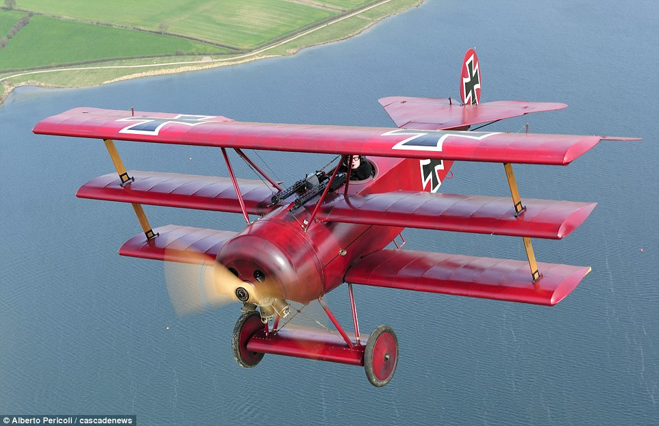

My favourite
no 1 favourite
my favourite plane is p38 fighter aitcraft dive bomber . I like it so much because of its unique design and its an very integillent aircraft and it was used in WW2 by americans it is used in sea battles and land battles it carries bombs that can give a very big explotion upto 2km .

My favourite bomber game is B-17 Flying Fortress it carry heavy tonns of bombe each weighed 1000kg and this bomber is also from WW2 ith my favourite bomber because it carried a heavy loaded with waepons it is an american bomber .

in next i like one japneese fightr called AM zero it is a fighter aircraft with so many air craft bulletts its never takes time to relode any shot it is my favourite aircraft fighter .Its also from WWW2 .

no 2 hobbies
my hobbies are all experiments before exam i tried to make ancestor of a gun it was called handgun i tried it to make from bamboo it was no so success fu because when i was firing it is the bullet is not going so far because the presence of less gunpowder in it . I was not habving so much of gun powder with me .

now i am trying to make a remot control aircraft of my own with carbode but some things were not available with me such as dc motor , wings turner, remot and etc.
i like one pistol it was designed by John Browning in the beginning of 19th century and it is used till now by other countries it was colt M1911 pistol